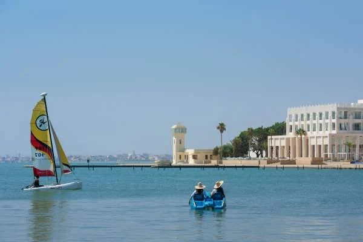
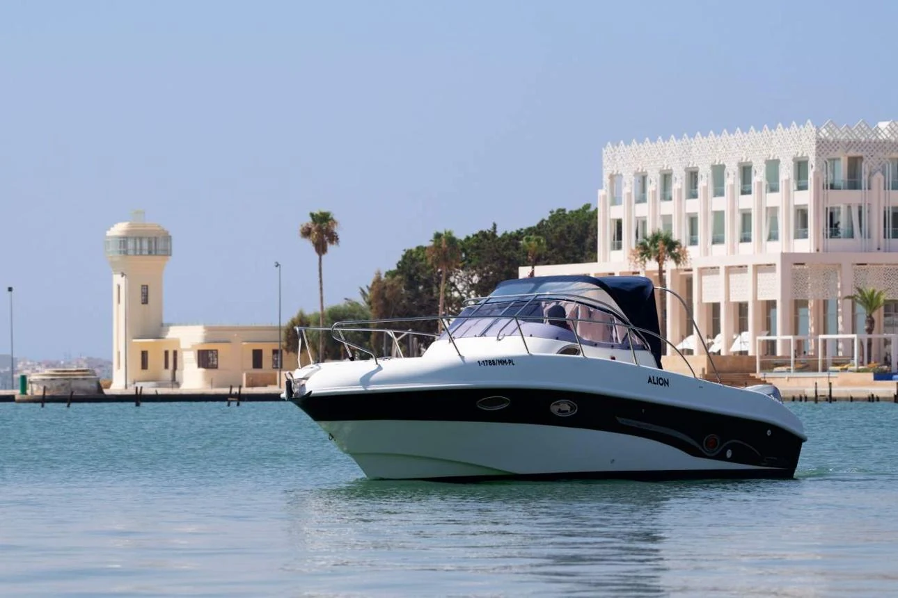
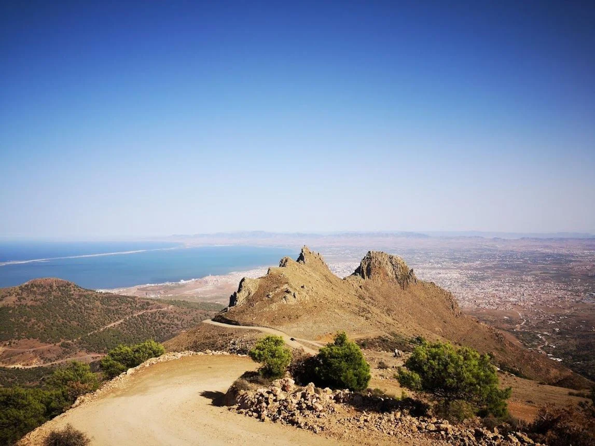
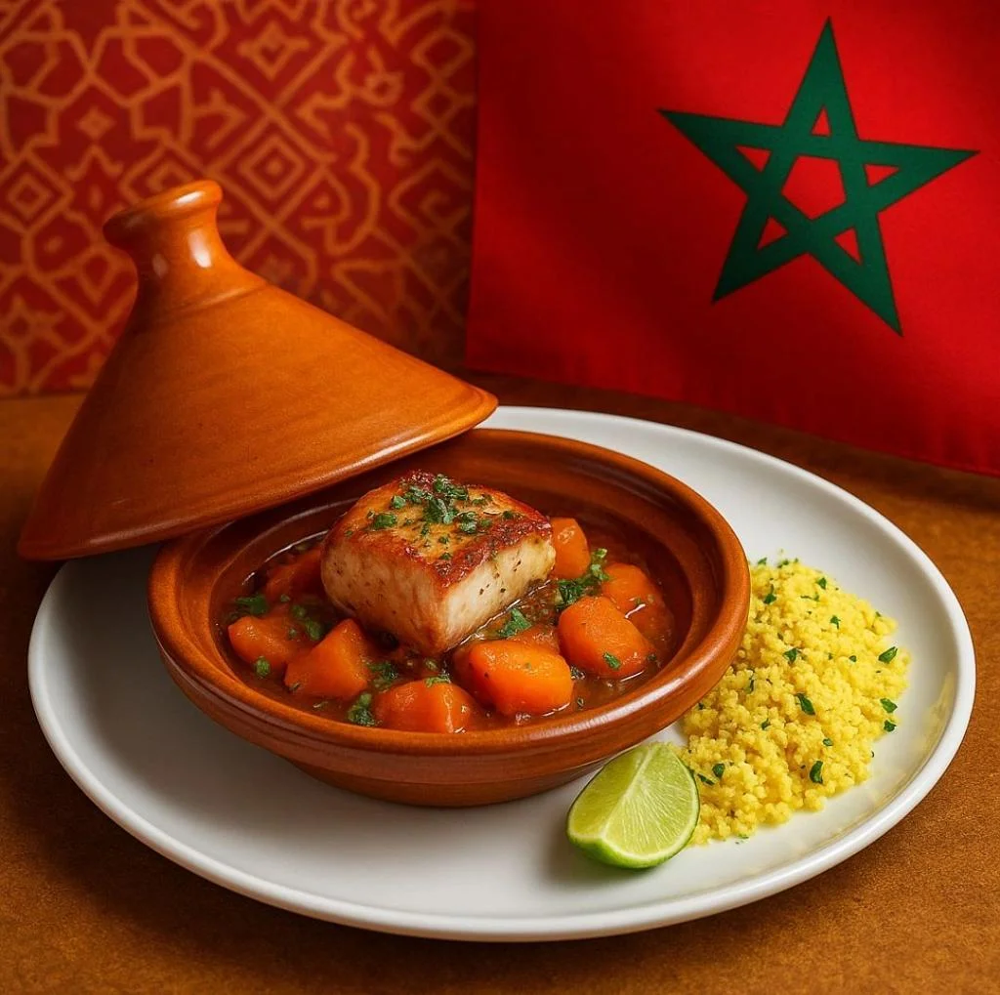
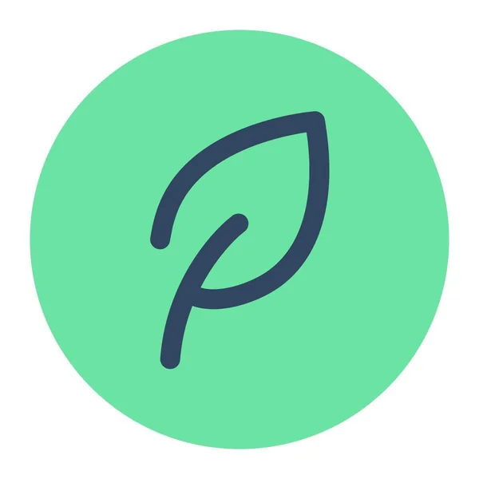

NADOR, MAROC • NATURE & AVENTURE
Découvrez la lagune
de Marchica
Des expériences authentiques entre mer, nature et
culture locale.
×͜× Nos activités à découvrir
Choisissez votre prochaine aventure autour de Marchica.

Kayak sur la lagune
Explorez les eaux calmes de Marchica en kayak et profitez de la nature.
Découvrir des activités →
Balade en bateau
Découvrez la lagune de Marchica lors d’une balade en bateau inoubliable.
Découvrir des activités →
Randonnée au Gourougou
Prenez de la hauteur sur les sentiers du Gourougou et découvrez des panoramas remarquables sur Nador, la lagune et la Méditerranée
Découvrir des activités →
Découverte culinaire
Éveillez vos papilles avec les saveurs du terroir rifain et les spécialités locales, dans une immersion gourmande au cœur de la région
Découvrir des activités →Voir les votre activités →
🌿 Pourquoi choisir Marchica Trips ?
Guides locaux
Des passionnés de la région qui partagent leurs connaissances et leur amour de Marchica

Petits groupes
Des groupes à taille humaine pour profiter d’une expérience conviviale et authentique
Sécurité garantie
Un accompagnement attentif pour profiter de vos activités en toute sérénité
Tourisme responsable
Explorez la lagune depuis l'eau, contemplez le littoral et partagez une escapade mémorable en famille ou entre amis.